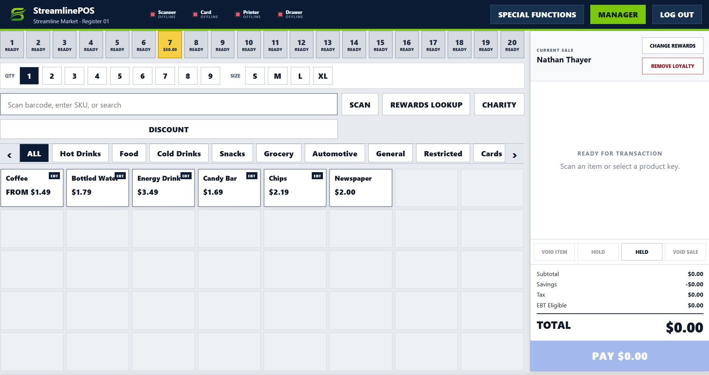
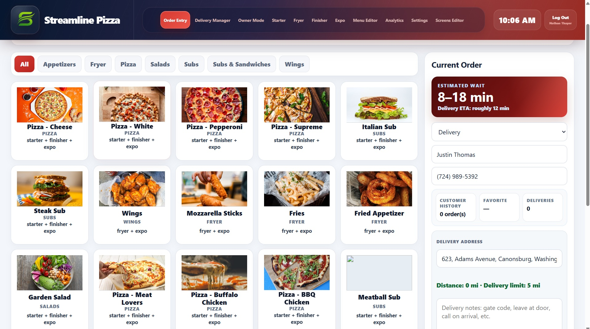
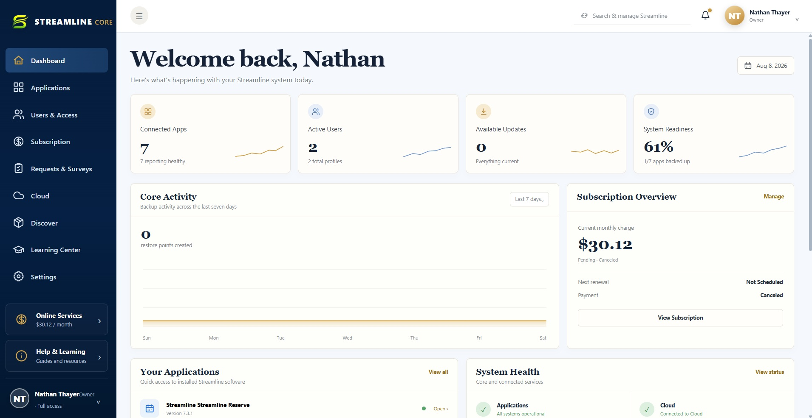

THE STREAMLINE PRODUCT FAMILY
Start with the problem.
Build from there.
Each Streamline product solves a focused operational job while sharing the same design philosophy, identity, and Core-managed foundation. If none of them fit your workflow, we can build a custom solution around your business.
Streamline POS
Fast, focused point-of-sale software for businesses that need the register to keep moving.

Streamline Pizza
A focused ordering and operations system for pizza shops that need speed without a generic restaurant workflow.

Streamline Inventory
Inventory control built around the real movement of product: counts, pulls, shelf life, waste, and ordering.
Streamline Workforce
Scheduling and workforce tools designed to keep everyday team management clear, fast, and familiar.
Streamline Reserve
Reservation and waitlist software built for local venues where timing, lanes, tables, or limited capacity matter.
Streamline Operations
A tablet-friendly operations workspace for recurring tasks, checks, and the work managers need completed consistently.
Streamline Display
A display layer for operational information that needs to stay visible without tying up a workstation.
Streamline Core
The controlled bridge between local Streamline applications and the cloud services that actually require the internet.

NOT SURE WHICH FITS?
Start with your workflow.
Tell us what you're trying to improve. We'll match you with the right Streamline product when one fits — and if nothing fits, we can build an entirely custom application from the ground up for your business.